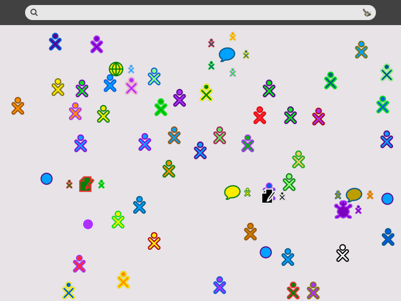
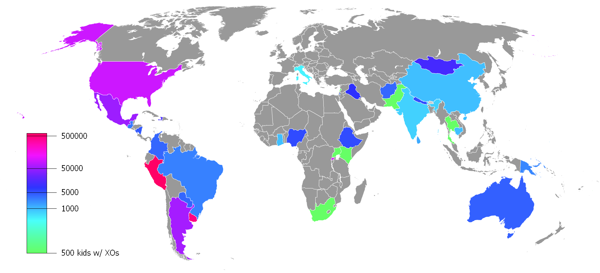

Summer Undergraduate Research Fellowship
What:
A program funded by the newly rennovated MAGIC Center at RIT that funds students to research and develop approved projects.
Proposal:
1.To implement Mozilla Open Badges onto the OLPC XO laptop
2.To make implementation simple and easy for furture users
3.To explore the benefits of gamification in education
FOSSRIT
An applied research facility dedicated to free and open source software and open web technologies. By providing students with a cooperative work experience, FOSSRIT educates and encourages aspiring developers to grow as contributors and a positive force in the world. FOSSRIT
SugarLabs
Sugarlabs is the company responsible for developing the Sugar Learning Platform which powers the OLPC XO laptop. SugarLabs
Sugar:
The Sugar Learning Platform is a free and open-source software focused on youth education.
One Laptop Per Child
Mission:
To provide each child with a rugged, low-cost, low-power, connected laptop.
UN Support:
In January 2008, the UN Development Programme partnered with OLPC to deliver XO's and learning resources to schools in the world's least developed countries. OLPC

Distribution:
OLPC XO latops are distributed in two distinct ways. 1. Deployments: Ordered by governments or schools 2. Give One Get One Program: Public Support
Currently, OLPC doesn't directly sell XO laptops to users but are known to hold fundraisers where they may be purchsed.
OLPC XO's have been deployed in many countires around the globe including: Peru, Uruguay, Haiti, Ghana, Rwanda, Etheopia, India, Mongolia, and many others.
